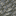

Как меняется тяга
«Тяжесть» считается как (масса − 1) / 24 и упирается в единицу.
- разгон по ровной: ×0.45 на полной тяжести
- накат с горы: ×1.85
- в гору: ×0.35
- руль: ×0.40
ЭЛЕКТРОПРИВОД / ПЯТЬ МЕСТ
Водитель и четыре пассажира. Масса экипажа влияет на разгон, торможение и скорость на спуске.
Зарядная станция ↓ SCOOTER / ORIGINAL MODEL
SCOOTER / ORIGINAL MODELСтенд повторяет формулы из ScooterEntity: разгон 0.032 за тик, трение 0.965, тормозная сила 0.085. Рельеф переключается кнопками, покрытие под колёсами — отдельной группой, экипаж добавляется в места 02–05. Показания HUD связаны с поездкой, а не нарисованы.
На ровной — до 80. Сними палец с газа: инерция никуда не делась.
Места 02–05 свободны.
Водитель уже на борту.
Это небольшой заезд по правилам мода, не полный Minecraft: без столкновений и разрушения блоков. Показания HUD, масса, разгон, накат, расход и покрытия связаны друг с другом. Можешь рулить A/D, когда дорога в фокусе.
Масса считается как сумма: игрок — 1.0, самокат — ещё единица. Дальше всё решает ScooterMassHelper: у каждого вида моба своя цифра. Тяжёлый пассажир урезает разгон, но усиливает накат с горы — в коде это massAccelMul против massDownMul.
«Тяжесть» считается как (масса − 1) / 24 и упирается в единицу.
Число пассажиров меняет и наклон, и поворот, и расход заряда.
Места считаются от геометрии scooter: водитель, второй, третий — вдоль рамы.
| Существо | Масса | Существо | Масса |
|---|---|---|---|
| Страж | 12.0 | Железный голем | 8.0 |
| Разоритель | 7.0 | Зоглин / hoglin | 6.0 |
| Нюктер | 5.5 | Верблюд | 5.0 |
| Лошадь / ослик / мул | 4.5 | Панда | 4.0 |
| Корова | 3.5 | Эндермен | 2.5 |
| Свинья / овца | 2.2 | Житель | 1.1 |
| Зомби / скелет / крипер | 1.2 | Волк / кот / лиса | 0.5 |
| Курица / кролик / попугай | 0.2 | Игрок | 1.0 |
Станции расставляет ScooterStationSpawner по сетке 768 × 768 блоков с разбросом ±120. Шанс, что на станции окажется самокат: 2% на три, 6% на два, 15% на один. Заряд у найденного самоката случайный — от половины до полного бака.

3D недоступно. Выбери один из трёх портов на терминале — зарядка всё равно работает.
Потяни для обзора · колесо — приблизить · клик по порту — выбрать
 ПОРТ 01ДЛЯ ЭЛЕКТРОСАМОКАТА
ПОРТ 01ДЛЯ ЭЛЕКТРОСАМОКАТАПроедь немного, а потом припаркуйся у порта.
В игре порт ищет самокат совсем рядом: до двух блоков по горизонтали и одного по высоте. Зарядка не чинит прочность. Вода снижает прочность независимо от уровня заряда.
Заряд и прочность — независимые шкалы. Заряд кончился — самокат просто не едет, цел он или нет. А вот прочность уходит от воды, стен и копания.

Стена на скоростиВыше 20 км/ч удар о стену считается аварией: самокат отскакивает, часть прочности уходит. Скорость при этом частично сохраняется — в коде это отражение вектора движения, а не обнуление.
 Копание
КопаниеЧтобы копать, нужна скорость от 22 км/ч. Глубже ровь — больше урон. Разрушенный блок отнимает прочность по формуле ceil(количество × 5).
 Мёд и сено
Мёд и сеноМёд умножает скорость на 0.55, сено — на 0.75. Это не замедление «на глаз»: множитель применяется к накопленной скорости и к вектору движения.
 Вода
ВодаТрение в воде — 0.88, а прочность уходит по единице каждые 5 тиков. Из 500 единиц это примерно 50 секунд езды по воде.
Отражение от стены на слизи сохраняет модуль скорости целиком — угол падения равен углу отражения. Звук — удар слизью.
 Пробег
ПробегОдин блок пути съедает MAX_CHARGE / 15000 заряда. На крутом подъёме и при тяжёлом экипаже расход умножается — до +30% суммарно.
Три ключа: ScooterCharge, ScooterDurability и ScooterSpeed. При загрузке отсутствующий ключ берёт максимум: заряд — 1 000 000, прочность — 500. Скорость в NBT хранится «в нуле», чтобы при выгрузке не было рывка.
Так называется достижение в моде. Его реальный порог — 99,5 на HUD, то есть примерно 100. Догонять 320 для награды не нужно. Спидометр пересчитывает скорость по формуле 1 единица = 72 км/ч.
WASD — движение, Shift — слезть; можно посадить четырёх пассажиров. Порог для копания, удары о стены и разрушение блоков считаются на сервере, поэтому в стенде показаны только разгон, накат, покрытия и расход.